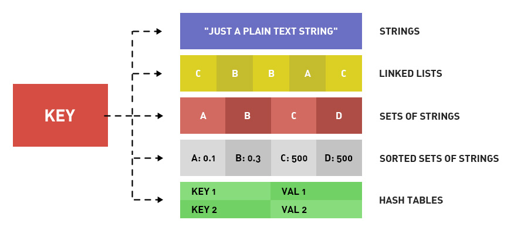

Redisデータ型は、文字列型、ハッシュ型、リスト型、セット型、ソート済みセット型に分けられます。
Redisはこんなに人気があるが、その動作速度はどのくらい速いのか？普通のノートパソコン一台で、1秒間に10万回の読み書き操作を完了できる。
原子操作：最小の操作単位であり、これ以上分割できません。つまり、最小の実行単位であり、他のコマンドに割り込まれることはありません。高並行下では競合状態は発生しません。
KEYの命名：良い提案としては、IDが1の記事のタイトルを格納するために article:1:title を使うことです。

一、前言
- 1、keyのリストを取得：KEYS pattern ワイルドカードには ? * [] とエスケープ \ がある。
- 2、key の存在確認： EXISTS key 存在すれば 1 を返し、存在しなければ 0 を返します。
- 3、建立 key 和删除 key：SET key 和 DEL key。
- 4、keyに基づいてそのキーに格納されているRedisデータ型を取得します：TYPE key。戻り値は string、list、hash、set、zset です。以下でこの5種の戻り値のRedisデータ型について一つずつ解説します。
- 5、rename oldkey newkey：キーの名前を変更します。newkey が存在する場合は上書きします。
- 6、renamenx oldkey newkey：キーの名前を変更します。newkey が存在する場合は上書きしません。
- 7、randomkey：ランダムに1つのキーを返す
- 8、move key db-index：keyを指定のデータベースに移動します。keyが存在しない場合、または既にそのデータベースにある場合は0を返します。成功した場合は1を返します。
二、Redisデータ型 Redisデータコマンド
1、Redisデータ型一文字列型：これは非常に理解しやすいです。1つのkeyが1つの文字列を格納します。データを保存したい場合は？JSONまたは他の文字列シリアライズに変換します。
2、Redisデータコマンド一文字列型：
- 1）赋值：SET key value。如 set hello world
- 2）取值：GET key。如 get hello。返回是 world
- 3）自動インクリメント：INCR key。MySQLのAUTO_INCREMENTです。INCR keyを実行するたびに、そのkeyの値は+1されます。keyが存在しない場合は、まず0を作成してから+1し、1を返します。値が整数でない場合はエラーになります。この操作は原子操作です。
- 4）デクリメント：DECR key。指定したキーの値を 1 減らします。 例：DECR num は、num-1 となります。
- 5）自增 N：INCRBY key increment 用来给指定 key 的值加 increment。如 INCRBY num 5 就是 num+5
- 6）自减 N：DECRBY key increment 用来给指定 key 的值减 increment。如 DECRBY num 5 就是 num-5
- 7）增加浮点数：INCRBYFLOAT key increment。
- 8）向尾部追加：APPEND key value。如set test:key 123、append test:key 456、get test:key 就是 123456
- 9）長さの取得：STRLEN key。
- 10）複数のキーに同時に値を設定する：MSET title これはタイトル description これは説明 content これは内容。
- 11）同时获取多个 key 的值：MGET title description content
- 12）ビット操作の取得：GETBIT key offset。例えば、文字 a の redis での保存は 01100001（ASCII は 98）なので、GETBIT key 2 は 1、GET key 0 は 0 です。
- 13）ビット操作の設定：SETBIT key offset value。例えば、文字 a の redis での保存は 01100001（ASCII は 98）なので、SETBIT key 6 0、SETBIT key 5 1 とすると、get key で得られるのは b です。取り出したバイナリが 01100010 だからです。
- 14）ビット操作の統計：BITCOUNT key [start] [end]：BITCOUNT key は、key の値の中でバイナリが 1 である個数を取得するために使う。一方、BITCOUNT key start end は、key の値の中で start と end の間にある部分文字列のバイナリが 1 である個数を統計するために使う（ややこしいですね）。
- 15）ビット操作のビット演算：BITOP operation resultKey key1 key2。operation はビット演算の操作で、AND、OR、XOR、NOT があります。resultKey は演算結果をこのキーに格納します。key1 と key2 は演算に参加するキーで、演算に参加するキーは複数指定できます。
3、Redisデータ型二ハッシュ型：
Redisは辞書（連想配列）の形式で格納されており、1つのkeyが1つのvalueに対応します。文字列型では、valueは単なる文字列のみです。一方、ハッシュ型（散列型とも呼ばれる）では、valueに対応するものも辞書（連想配列）です。つまり、Redisのハッシュ型/散列型では、keyに対応するvalueは2次元配列であると理解できます。ただし、フィールドの値は文字列のみです。つまり、2次元配列のみで、それ以上の次元は持てません。
4、Redisデータコマンド二ハッシュ型：
- 1）赋值：HSET key field value。如 hset user name lane。hset user age 23
- 2）取值：HGET key field。如 hget user name，得到的是 lane。
- 3）同一个key多个字段赋值：HMSET key field1 value1 field2 value2...
- 4）同じKEYの複数のフィールドの値を取得：HMGET key field1 fields2...
- 5）KEYのすべてのフィールドとすべての値を取得：HGETALL key。例えば HGETALL user で得られるのは name lane age 23。各戻り値はそれぞれ独立した1行です。
- 6）フィールドが存在するかどうか：HEXISTS key field。存在すれば1を返し、存在しなければ0を返します。
- 7）フィールドが存在しない場合に値を設定：HSETNX key field value。keyの配下のフィールドfieldが存在しない場合は、fieldフィールドを作成し、その値をvalueにします。fieldフィールドが存在する場合は、何も操作を行いません。その効果はHEXISTS + HSETと同じです。しかし、このコマンドの利点は原子操作であることです。どんなに高い並行性でも怖くありません。
- 8）インクリメント N：HINCREBY key field increment。文字列のインクリメント型と同じなので、説明は省略します。
- 9）フィールドの削除：DEL key field1 field2... 指定したKEYの1つまたは複数のフィールドを削除する。
- 10）フィールド名のみ取得：HKEYS key。HGETALLと似ていますが、フィールド名のみを取得し、フィールド値は取得しません。
- 11）フィールド値のみ取得：HVALS key。HGETALLと似ていますが、フィールド値のみを取得し、フィールド名は取得しません。
- 12）フィールド数の取得：HLEN key。
5、Redisデータ型三リスト型
リスト型は、順序付けられた文字列リストを格納します。一般的な操作は、両端に新しい要素を挿入することです。時間計算量はO(1)です。構造はリンクリストです。先頭と末尾のアドレスを記録します。ここまで見ると、Redisデータ型のリスト型の大きな役割が明確になります。それはキューです。新しいリクエストは末尾に挿入され、処理済みのものは先頭から削除されます。また、例えば微博（Weibo）のタイムラインや、例えばログなどです。リスト型は、インデックスが0から始まる配列です。リンクリストで格納されているため、先頭と末尾に近い要素ほど操作が速く、中央に近いほど遅くなります。
6、Redisデータコマンド三リスト型：
- 1）先頭に挿入：LPUSH key value1 value2...。追加後のリストの長さを返す。
- 2）末尾に挿入：RPUSH key value1 value2...。追加後のリストの長さを返す。
- 3）先頭からポップ：LPOP key。ポップされた要素の値を返します。この操作は、keyリストの最初の要素を削除してから、その要素を返します。
- 4）末尾からポップ：RPOP key。ポップされた要素の値を返します。
- 5）リストの要素数：LLEN key。keyが存在しない場合は0を返します。
- 6）リストのサブリストを取得：LRANGE start end。start番目からend番目までの要素のリストを返します。startとendを含みます。負のインデックスに対応しています。-1は最後の要素、-2は最後から2番目の要素を表します。
- 7）リスト内の指定値を削除：LREM key count value。keyというリストの中で、値がvalueであるすべての要素を削除しますが、削除するのはcount個だけです。count+1個ある場合は、最後の1個を保持します。countが存在しないか0の場合は、すべて削除します。countが0より大きい場合は、先頭から末尾に向かってcount個削除し、countが0より小さい場合は、末尾から先頭に向かってcount個削除します。
- 8）指定インデックスの値を取得：LINDEX key index。例えば、LINDEX key 0はリストの最初の要素です。indexは負の値にすることもできます。
- 9）インデックスと値の設定：LSET key index value。この操作は、指定されたkeyかつ指定されたindexの値を変更するだけです。indexが存在しない場合はエラーになります。
- 10）部分を保持し、他を削除：LTRIM key start end。start から end までのすべての要素を保持します。start と end を含みます。他はすべて削除します。
- 11）リストへの要素の挿入：LINSERT key BEFORE/AFTER value1 value2。リストの先頭から走査し、値が value1 であることを見つけたら停止し、value2 を挿入します。BEFORE または AFTER に応じて、value1 の前か後ろに挿入します。
- 12）あるリストの要素を別のリストに移動：RPOPLPUSH list1 list2。リストlist1の右端の要素を削除し、その要素をリストlist2の左端に挿入します。原子操作です。
7、Redisデータ型四セット型：
セット型は、複数のセットに対する操作や演算を容易にするためのものです。セット内の各要素は異なり、順序の概念はありません。各要素は文字列であり、かつ文字列のみです。一般的な操作は、セットへの挿入、削除、存在判定などの操作です。時間計算量はO(1)です。積集合、和集合、差集合の演算が可能です。例えば、記事1には3つのタグがあり、Redisデータ型のセット型で格納されています。記事2にも3つのタグがあり、Redisデータ型のセット型で格納されています。記事1はMySQLについて、記事2はRedisについてです。すると、積集合は「データベース」を1つ導き出すのではないでしょうか？（仮に「データベース」というタグが両方の記事にあるとします）。セット型はRedis内では、値が空のハッシュテーブルとして格納されます。
8、Redisデータコマンド四セット型：
- 1）增加：SADD key value。
- 2）删除：SREM key value。
- 3）指定のセットの全要素を取得：SMEMBERS key。
- 4）特定の要素が存在するかどうかの判定：SISMEMBER key value。
- 5）差集合演算：SDIFF key1 key2...。複数のセットに対して差集合演算を行います。
- 6）積集合演算：SINNER key1 key2...。複数のセットに対して積集合演算を行います。
- 7）和集合演算：SUNION key1 key2...。複数のセットに対して和集合演算を行います。
- 8）セット内の要素数を取得：SCARD key。セット内の要素の総数を返します。
- 9）差集合、積集合、和集合の演算結果を指定したkeyに格納する：SDIFFSTORE storekey key1 key2。key1 と key2 の差集合を求め、その結果は key が storekey である集合に格納される。SINNERSTORE と SUNIONSTORE も同様である。
- 10）セット内のランダムな要素を取得：SRANDMEMBER key [count]。パラメータcountはオプションです。countが存在しない場合はランダムに1つ取得します。countが0より大きい場合は、重複しないcount個の要素を取得します。countが0より小さい場合は、合計|count|個の要素を取得し、重複が許されます。
- 11）ランダムに要素を1つポップ：SPOP key。セットからランダムに要素を1つポップして削除し、その要素の値を返します。
9、Redisデータ型五ソート済みセット型：
セット型は順序がなく、各要素は一意です。一方、ソート済みセットは順序があり、各要素は一意です。ソート済みセット型とセット型の違いは、ソート済みセットでは各要素に「スコア」という属性が用意されていることです。ソート済みセットはスコアに基づいて並べ替えられます。ソート済みセットは、ハッシュテーブルとスキップリストを用いて実装されています。そのため、リストと比較して、中間の要素に対する操作も高速です。時間計算量はO(log(N))です。Redisデータ型のソート済みセット型は、Redisデータ型のリスト型よりもリソースを消費します。
10、Redisデータコマンド五ソート済みセット型
- 1）增加：ZADD key sorce1 value1 sorce2 value2...。
- 2）スコアを取得：ZSCORE key value。keyのソート済みセット内で、値がvalueである要素のスコアを取得します。
- 3）ランキングが特定の範囲内にある要素のリストを取得：ZRANFGE key start stop [WITHSCORE]。ランキングがstartとendの間にある要素のリストを取得します。startとendの2つの要素を含みます。各要素は1行で出力されます。WITHSCOREパラメータがある場合は、1行に要素値、次の行にスコアが出力されます。時間計算量はO(LOGn+m)です。スコアが同じ場合は、0<0
- 4）指定されたスコア範囲の要素を取得：ZRANGEBYSCORE key min max [WITHSCORE] [LIMIT offset count]。min と max の間のスコアを持つ要素リストを取得します。両端を含みます。各要素は1行です。WITHSCORE パラメータがある場合、1行に要素値、次の1行にスコアを出力します。min が max より大きい場合は、順序が逆転します。
- 5）特定の要素のスコアを増加：ZINCRBY key increment value。指定されたソート済みセット内の値が value である要素のスコアに +increment します。戻り値は変更後のスコアです。
- 6）セット内の要素の数を取得：ZCARD key。
- 7）指定されたスコア範囲内の要素の個数を取得：ZCOUNT key min max。
- 8）1つまたは複数の要素を削除：ZREM key value1 value2...
- 9）ランク範囲に基づいて要素を削除：ZREMRANGEBYRANK key start end。ランクが start と end の間にある要素を削除する。
- 10）スコア範囲に基づいて要素を削除：ZREMRANGEBYSCORE key min max。
- 11）要素のランクを取得（昇順）：ZRANK key value。そのセット内で value が小さい方から数えて何番目かを取得します。
- 12）要素のランクを取得（降順）：ZREVRANK key value。そのセット内で value が大きい方から数えて何番目かを取得します。
- 13）ソート済み集合の積集合：ZINTERSTORE storekey key1 key2...[WEIGHTS weight [weight..]] [AGGREGATE SUM|MIN|MAX]。複数の集合の積集合を計算し、結果は storekey に格納される。戻り値は storekey の要素数である。AGGREGATE が SUM の場合、storekey 集合の各要素のスコアは、計算に参加した集合のスコアの合計となる。MIN は参加したスコアの最小値。MAX は参加したスコアの最大値。WEIGHTS は各集合の重みを設定する。例：WEIGHTS 1 0.1。すると集合Aの各要素のスコアは *1、集合Bの各要素のスコアは *0.1 となる。
- 14）有序集合的并集：ZUNIONSTORE storekey key1 kye2...[WEIGHTS weight [weight..]] [AGGREGATE SUM|MIN|MAX]
クリックしてノートを共有
<p style="font-size:14px;">笔记需要是本篇文章的内容扩展！</p><br> <p style="font-size:12px;"><a href="../tougao.html" target="_blank">文章投稿，可点击这里</a></p> <p style="font-size:14px;"><a href="./runoob-user-test-intro.html" target="_blank">注册邀请码获取方式</a></p> <h3 class="text-muted"><i class="fa fa-info-circle" aria-hidden="true"></i> 分享笔记前必须<a href=".." class="runoob-pop">登录</a>！</h3> <p><a href="./runoob-user-test-intro.html" target="_blank">注册邀请码获取方式</a></p>